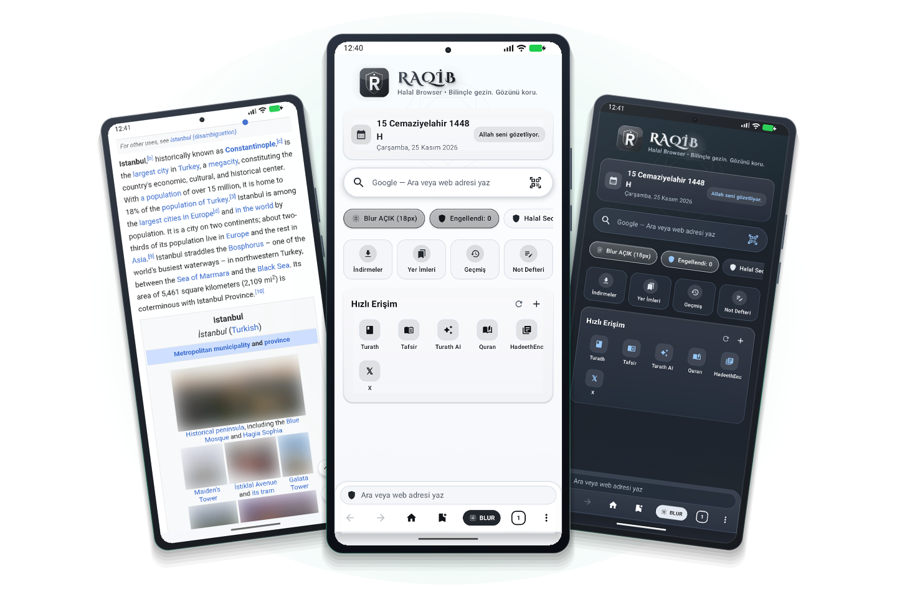

Bilinçle gezin. Gözünü koru.
RAQİB (الرقيب), interneti hızlı, huzurlu ve dikkat dağılmadan kullanmak için geliştirilmiş ultra hafif bir Android tarayıcısıdır. t=0ms anlık Katı Blur, zorunlu Helal Kalkan, Aho-Corasick reklam engelleyici ve yerel sayfa içi çeviri tek bir 4.56 MB uygulamada.

Her pikseli sade, hızlı ve cam zarafetinde
RAQİB v5.6.2'ın gerçek Android 16 ekran görüntülerini incelemek için herhangi bir cihaza dokunun.
Tek bir ultra hafif tarayıcıda eksiksiz koruma ve verimlilik
Göz koruması, reklam/izleyici kalkanı, sayfa içi çeviri, ilim ve çalışma araçları hiçbir performans ödünü olmadan bir arada.
%100 Cihaz İçi Gizlilik ve Doğrulanabilir İmzalı Sürümler
Her resmi APK, kalıcı 4096-bit RSA anahtarıyla imzalanır ve SHA-256 parmak iziyle açıkça doğrulanabilir.
Resmi İmzalı APK (v5.6.2) & İmza Doğrulama
Doğrudan GitHub Releases üzerinden indirin ve aşağıdaki SHA-256 özetleriyle dosyanın değiştirilmediğini saniyeler içinde doğrulayın.
Android'de Otomatik Güncelleme (Obtainium)
Play Store olmadan bile yeni RAQİB sürümlerini doğrudan resmi GitHub Releases kaynağından otomatik takip edebilirsiniz:
- Android'de açık kaynaklı Obtainium uygulamasını açın → Add App.
- Kaynak adresi olarak şunu girin:
https://github.com/TalibTRB/raqib-browser - Obtainium yeni imzalı sürümleri otomatik yakalar ve kalıcı RSA imzasını doğrular.
Sıfır Veri Toplama Taahhüdü
- ✓Hesap yok, analiz SDK'sı yok, geliştirici telemetri sunucusu yok.
- ✓Kaydedilen parolalar donanımsal Android Keystore (AES-GCM) ile şifrelenir.
- ✓Buluta otomatik yedekleme (allowBackup=false) kapalıdır; veriler cihazınızda kalır.